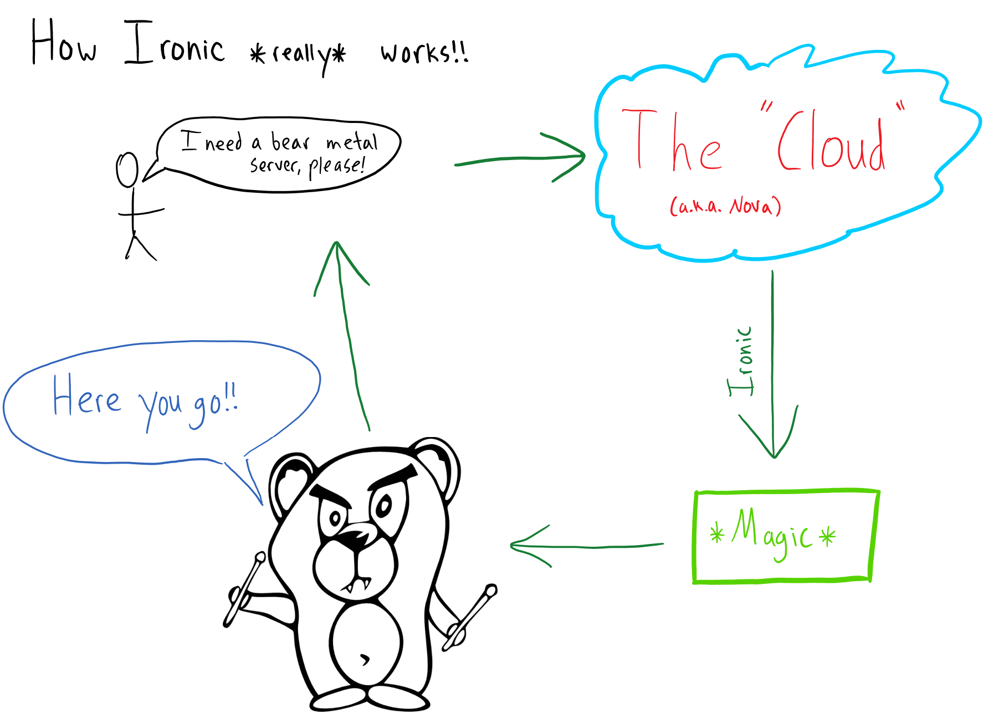
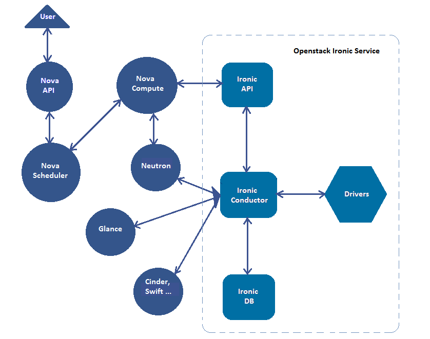

OpenStack Baremetal (Ironic)

By Dmitry Tantsur <dtantsur@redhat.com>
with help of Pixie Boots, the Ironic drummer bear
This talk is about
- Ironic architecture overview
- Ironic drivers overview
- Juno achievements
- Kilo plans and progress
Becoming Ironic
Ironic is an OpenStack project which provisions bare metal (as
opposed to virtual) machines by leveraging common technologies such
as PXE boot and IPMI to cover a wide range of hardware, while
supporting pluggable drivers to allow vendor-specific functionality
to be added.
© http://docs.openstack.org/developer/ironic/
Or simply speaking: tool for building clouds, where each instance occupy the whole physical machine.
Use Cases
-
TripleO
TripleO is a program aimed at installing, upgrading and operating OpenStack clouds using OpenStack's own cloud facilities as the foundations.
© https://wiki.openstack.org/wiki/TripleO -
Bare Metal Clouds
Provide bare metal instances to the clients for better and more predictable performance, or access to low-level hardware features (like OpenCL).
-
General purpose hardware provisioning
Architecture: overview
... in 30 seconds
by Kyle Stevenson
... in 2 minutes
http://docs.openstack.org/developer/ironic/deploy/user-guide.html
Architecture: hash ring
- Ironic conductors are organized in a stable hash ring
- Each conductor maps to a configurable number of hashes in the ring
- Each node is mapped to a conductor by it's UUID
- On conductor enter/leave the hash ring is rebuilt and node mapping is updated
Drivers
Ironic delegates dealing with particular hardware to number of drivers.
Drivers consist of several interfaces, each having some specific role in the deployment process.
Interfaces: Juno version
- Power
Handles power actions, such as power on or reboot - Deploy
Handles imaging the target system - Vendor passthru
Anything vendor-specific - Management
Other utilities e.g. changing boot device or getting sensors reading using IPMI - Console
Provides remote console
Interfaces: power
- IPMI
- SNMP
- SSH (virsh etc)
- DRAC (DELL)
- iLO (HP)
- SeaMicro
- iRMC (FUJITSU) Kilo!
- AMT/vPro Kilo!
- Dataprobe iBoot Kilo!
Interfaces: deploy
- Actually a mix of boot method and deploy method
- Boot method defines how Ironic is going to reach the machine for deploying on it (usually by running some ramdisk on the machine)
- Deploy method defines how Ironic will be moving images on the machine
Interfaces: deploy: boot part
- PXE
Preboot Execution Environment (PXE) enables system’s BIOS and network interface card to bootstrap a computer from the network using TFTP in place of a disk. - iPXE
Mostly the same as PXE but using HTTP instead of TFTP. - Virtual media
Some vendors support attaching ISO or floppy disk image to the machine remotely.
Interfaces: deploy: deploy part
- iSCSI
Ramdisk publishes the hard drive via iSCSI, Ironic conductor put the image on it and signals back. - IPA
Ironic Python Agent is an effort to create a smart ramdisk for Ironic capable of downloading and writing images without help of the conductor.
https://github.com/openstack/ironic-python-agent
Management and console interface are usually closely related to the power interface
Juno Cycle Results
- Ironic graduated and driver merged into Nova
- Deploy driver for IPA
- iPXE support
- Added management interface to drivers
- iLO and DRAC drivers
- UEFI boot mode support
- Sending IPMI sensors readings to Ceilometer
And many more: https://blueprints.launchpad.net/ironic/juno
Kilo Cycle Challenges
Kilo: Images and Local Booting
Two types of images:
- Partition image
only root partition, partitioning is done by Ironic - Whole disk image
Kilo!
all partitions are created on an image
Two types of possible boot modes:
- PXE boot
- Local boot Kilo!
Challenge
Make all combinations possible with all drivers.
Kilo: New operations
We've refactored our state machine and added new operations on a node:
- Cleaning
Clean up after the previous tenant so that nothing is exposed to the new tenant, e.g.:- Hard drive erasure
- Applying BIOS settings
- Zapping
Additional long-running and/or destructive operations that may be run between workloads, or before the first workload, e.g.:- RAID configuration
- Firmware updates
- Inspecting (aka discovery)
Kilo: Smaller Changes
- Configdrive support
- AMT and iRMC drivers
- Support operations with RAID
- API microversioning
- Separate node state for nodes that are managed by Ironic but should not be provided to Nova for deploying
Hardware Inspection
Discovering required hardware properties for a machine, knowing only power credentials (e.g. IPMI).
Not to confuse with auto-discovery, when new hardware is enrolled automagically.
What to discover
- Basic scheduling properties
CPU count and architecture, memory size, disk size - MAC addresses of NICs
- Vendor-specific hardware capabilities
boot modes, RAID level, GPU devices, etc - Matching hardware against roles/flavors
or even creating flavors based on hardware
Out-of-band
Possible with e.g. iLO (HP) Kilo! and DRAC (DELL).
Pros: usually fast and simple.
Cons: limited by BMC capabilities.
In-band
Implemented via booting a special ramdisk on a node.
Pros: can discover anything that can be discovered in theory.
Cons: complex and long, requires special DHCP configuration and a whole boot cycle.
There was an agreement not to implement it as part of Ironic codebase.
Meet Discoverd
https://pypi.python.org/pypi/ironic-discoverd
Service developed specifically for conducting in-band inspection.
- Sets instances for inspection
- Manages firewall setting to be able to coexist with Neutron
- Processes data received from the ramdisk
And supports plugins for vendor-specific processing!
A special ramdisk is required which is provided within diskimage-builder
Discoverd Workflow - part 1
- Introspection on a given node UUID is requested via HTTP API
- Discoverd requests node details from Ironic and validates node state
- Discoverd fetches attributes useful for finding node and stores them in local database
- Discoverd updates firewall to allow PXE-booting from node MAC (if it's already set)
- Discoverd asks Ironic to PXE-boot the node
Discoverd Workflow - part 2
- Ramdisk posts collected information back to Discoverd
- Plugins hooks are executed to pre-process the data
- Discoverd looks up node in the local database
- Discoverd creates Ironic ports
- Plugins hooks are executed to detect which changes to apply to the node
- Discoverd updates the node and powers off it
Discoverd: possible applications
- Support initializing IPMI credentials in the future
Requires manual power on - Node validation as part of cleaning or zapping Compare discovered data with what you have in Ironic
- Node trust validation via Intel TXT